Projet-5A

Entreprise
Équipe
Contexte
Missions

GE Power Conversion est une division de General Electric (GE), un conglomérat américain fondé en 1892 par la fusion d'une partie de Thomson-Houston Electric Company et d'Edison General Electric Company. General Electric (GE) est aujourd'hui l'une des entreprises les plus cotées en bourse et est présente dans plus de 150 pays.
GE Power Conversion est une division spécialisée dans les solutions d'énergie électrique et de conversion de puissance. Avec une expertise reconnue dans le domaine de l'électrification, GE Power Conversion propose des technologies innovantes pour une large gamme d'industries, notamment l'énergie, le pétrole et le gaz, la marine, les métaux, les mines et les infrastructures.
Les offres de produits et de services de GE Power Conversion comprennent des convertisseurs de puissance, des systèmes d'entraînement, des moteurs électriques, des générateurs, des systèmes de contrôle-commande, des solutions d'automatisation, des systèmes de stockage d'énergie et des services de maintenance.
Mon projet s’effectue au cœur du site GE Power Conversion de Nancy, plus précisément de Champigneulles.
Ce site de Champigneulles voit le jour après un départ du site de Nancy Oberlin en 2001, sous le nom de Converteam. C'est en 2011 que le site devient GE Power Conversion, après un rachat de Converteam par le groupe General Electric. En 2018, le site de Nancy a fêté ses 120 ans d'existence.

Dans le cadre de mon projet, j'ai le plaisir d'intégrer l'équipe Qualité fournisseurs de GE Power Conversion Nancy.
Le travail de cette équipe est divisé en trois grandes missions :
La première mission de cette équipe consiste à se rendre chez nos fournisseurs afin de les évaluer et les qualifier pour certains procédés, ou de les certifier selon certaines normes.
Dans le cadre des qualifications, ces évaluations nous permettent de confirmer que les fournisseurs possèdent les compétences requises pour les travaux qui leur sont demandés par nos acheteurs.
Les certifications, quant à elles, nous permettent de vérifier et d'affirmer à nos clients que nos fournisseurs respectent les normes qui nous sont imposées lors de la commande.
Dans une entreprise telle que GE Power Conversion, qui fabrique des produits sur mesure avec des spécifications différentes pour chaque commande, il n'est pas possible de disposer d'un stock préalable de pièces de rechange. Par conséquent, l'entreprise fonctionne en flux tendu, ce qui signifie qu'elle produit selon la demande.
Cependant, ce mode de fonctionnement présente un défi majeur : si une pièce ne répond pas aux critères de conformité, cela peut entraîner un blocage de toute la chaîne de production. Lorsqu'une non-conformité est détectée, il devient urgent d'agir. Dans ce cas, un rapport de non-conformité (NCR - Non Conformity Report) est créé par l'équipe qui a identifié le problème, puis transmis à l'équipe Qualité Fournisseurs.
Les membres de l'équipe Qualité Fournisseurs doivent maintenant collaborer avec le fournisseur pour trouver une solution rapide à ce problème. Les mesures prises peuvent inclure le remplacement de la pièce défectueuse, sa réparation ou même un remboursement.
Dans le cas où le fournisseur détecte lui-même une non-conformité avant de nous livrer les pièces, il peut soumettre une demande de dérogation appelée SDR (Supplier Derogation Request). Cette demande de dérogation est ensuite reçue par le service Qualité Fournisseurs, qui l'examine en collaboration avec les parties concernées, comme le client ou le bureau d'études. Une fois que la décision concernant la SDR est prise, le service Qualité Fournisseurs communique avec le fournisseur. Le SQE peut accepter la demande de dérogation avec ou sans pénalité, ou la refuser, auquel cas un rapport de non-conformité (NCR - Non Conformity Report) est ouvert.
La dernière responsabilité des membres de l'équipe Qualité Fournisseurs est de mener des audits et d'accompagner nos fournisseurs autant que possible afin de prévenir les NCR et les SDR. Si un fournisseur présente un nombre excessif de NCR détectées, il peut lui être demandé de fournir un plan d'action détaillé pour résoudre ce problème. De plus, un audit peut être réalisé pour évaluer la mise en œuvre et les résultats de ce plan d'action.
Mon Projet de 5ème année prend place au sein d'un contexte un peu particulier. En effet ce dernier se déroule lors de mon contrat de professionnalisation que j'exerce chez GE Power Conversion. Ce contrat professionnel fait suite à un stage de 4e année effectué dans la même entreprise.
Le sujet de mon stage consistait à développer une application modulaire pour la gestion des fournisseurs et de leurs non-conformités, pour les trois sites GE Power Conversion France (Nancy; Villebon; Belfort).
Les principaux modules de cette application sont les suivants :
Ce module permet de gérer les informations relatives aux fournisseurs, telles que les coordonnées, les certifications, les évaluations de performances, etc. Il facilite le suivi des relations avec les fournisseurs et la communication avec eux.
Ce module est dédié à la gestion des non-conformités. Il permet de créer et de suivre les rapports de non-conformité (NCR), d'attribuer des actions correctives, de gérer les dérogations et de suivre l'état d'avancement de la résolution des problèmes.
Mes missions pour cette période équivalant à la période de projet se divisent sous 2 angles différents. Un premier orienté gestion des utilisateurs et un deuxième portant sur l'importation automatique de la data utile dans l'application (exemple : lignes de commandes, importées depuis une autre application)
----------------------------------------------------------------
Cet angle se divise en 3 autres sous-parties :
Une interface graphique permettant à l'administrateur de l'application de pouvoir valider ou non des comptes et gérer les rôles associés à ces comptes sans passer par le code.
Authentifier l'utilisateur sans qu'il ait à passer par un formulaire de connexion qui faisait perdre du temps à chaque consultation du site.
Développer un système accessible depuis chaque page où l'utilisateur peut saisir un ticket, et une interface où l'administrateur peut consulter et gérer ces tickets.
----------------------------------------------------------------
Cet angle consistait à trouver un moyen de récupérer automatiquement la donnée utile à l'application mais se trouvant sur d'autres applications tierces.
Pour mes résultats nous allons les données en reprenant dans le même ordre les missions évoquées dans la section Mission. Cependant il ne m'a pas été permis d'exporter en dehors de mon domaine d'entreprise des photos ou schéma. Je vais donc essayer d'être le plus clair possible.
----------------------------------------------------------------
Cet angle se divise en 3 autres sous-parties :
Pour cette partie j'ai développé une page contenant un tableau séparé en trois modules respectivement compte admin ; compte non validé et compte validé. Chaque ligne contient le nom et prénom de la personne ainsi que sa clé unique l'identifiant au sein de l'entreprise et le rôle demandé. L'administrateur peut depuis ce tableau grâce à des listes contenues directement au sein de chaque ligne changer le rôle ou le statut de validation d'un compte utilisateur.
De plus la page contient un 4e module sur la gauche exposant trois chiffres clés que l'administrateur peut voir en un coup d'œil à savoir le nombre de comptes admin; le nombre de demandes de compte non validées et enfin le nombre de demandes de compte validées.
Au sein de notre entreprise à chaque allumage de notre ordinateur professionnel lors de la première connexion à un navigateur il nous est demandé de renseigner nos identifiants professionnels. Grâce à un peu de recherche et un script PHP nous pouvons récupérer ces informations dans l'header du navigateur.
Ceci m'a permis que lorsque la personne se connecte pour la première fois sur le site je lui expose ces informations professionnelles qui doivent me confirmer pour ne pas usurper l'identité d'un tiers Après m'avoir confirmé son identité la personne parmi la liste déroulante peut choisir un rôle qui sera le rôle demandé à l'administrateur. La personne peut enfin soumettre sa demande.
Une ligne est alors stockée en base de données avec les informations de la personne et le statut de sa demande. Si cette personne tente de se reconnecter au site alors que la demande n'a pas encore été traitée par l'administrateur (visible en base de données grâce au statut) la personne est renvoyée vers une page qui expose un message d'attente. Une fois la demande validée par l'administrateur la personne sera alertée automatiquement par mail et pourra enfin accéder à son interface.
Maintenant pour chaque connexion la personne passe par une page de connexion transparente où un script page p récupère ses informations dans le header et la connecte automatiquement. Chaque personne depuis son PC peut donc se connecter seulement et uniquement à sa session.
Pour le système de tickets sur chaque page du site a été rajouté une petite languette comments l'utilisateur peut cliquer et soumettre un commentaire. L'administrateur quant à lui depuis son interface de gestion des utilisateurs évoquée juste un peu plus haut dans cette partie,peut accéder aux commentaires émis par les utilisateurs. L'administrateur peut alors prendre connaissance des commentaires, voire par qui ils ont été rédigés et quand. Mais peut aussi supprimer les commentaires pour ne garder que les plus pertinents ou encore les non traités.
----------------------------------------------------------------
Pour cette partie, j'ai travaillé en collaboration avec les développeurs des autres applications, ainsi qu'avec mon gestionnaire réseau. Nous avons utilisé des routines Windows et des scripts bash pour développer des extractions automatiques de données à partir des applications tierces. Ensuite, mes scripts PHP ont été automatiquement appelés pour traiter ces données et les saisir dans mes bases de données. Nous avons également mis en place des éléments de vérification pour nous assurer qu'aucun cycle n'a été manqué.